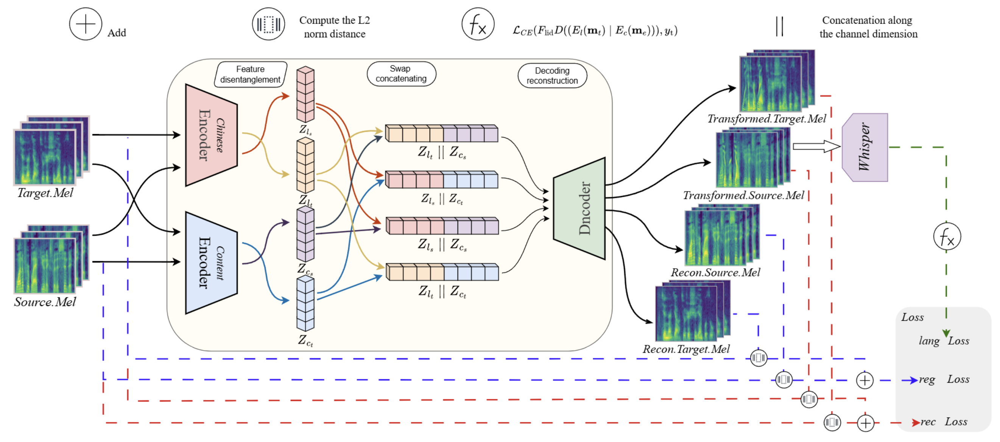

DUAP:
Disentanglement-based Universal Adversarial Perturbations for Robust Multilingual Speech Privacy Protection
[Paper][GitHub]
Qianli Ma, Wenjie Zhang, Jiahao Chen, Jiazhen Jia, Rangding Wang, Diqun Yan, Member, IEEE
Abstract: The rapid advancement of automatic speech recognition (ASR) models has significantly bolstered their multilingual proficiency and robustness, amplifying concerns over user speech privacy. Attackers may use hidden microphones or network attacks to capture and transcribe sensitive user interactions. Whisper, a state-of-the-art (SOTA) multilingual speech recognition model, delivers exceptional transcription accuracy across diverse languages. However, its superior performance also extends privacy leakage risks to multilingual contexts. Previous privacy-preserving methods based on adversarial examples were primarily optimized for monolingual models, limiting their effectiveness in multilingual settings. Moreover, as these perturbation mechanisms were predominantly tailored for English, their transferability to other languages remains constrained.
To address this vulnerability, we propose the Disentanglement-based Universal Adversarial Perturbation (DUAP), a privacy-preserving method designed to counteract the Whisper model. Unlike optimization-based approaches, DUAP embeds language-specific features in the latent space to generate robust adversarial perturbations, providing consistent protection across multiple languages and effectively mitigating privacy risks in multilingual contexts. The method employs a two-stage language attack: first, a Language Feature Disentanglement (LFD) model disentangles and reconstructs language-specific features to produce adversarial examples (AEs); second, gradient-based optimization refines AEs to disrupt Whisper's language identification(LID) module. DUAP's perturbations, effective in physical and digital settings, achieve SNRs from 40 dB (lightest) to above 17 dB (strongest). Across three Whisper model sizes, DUAP yields WERs over 95% (English), 85% (other languages), and 87% (physical settings), maintaining above 96% under AAC (64, 72 kbps) and MP3 (32, 96 kbps) compressions.
Contents
DUAP Workflow

Figure 1. Overview of the proposed Language Feature Disentanglement that models adversarial attacks as a feature disentanglement and swap-reconstruction process. In the attack process, dual encoders disentangle language and content features, then swap-reconstruction embeds target language features into the source mel, producing transformed.source.mel as the adversarial sample.
DUAP Scenarios for Protecting Speech Privacy

(a) Digital scenario

(b) Physical scenario
Figure 2: DUAP Scenarios for Protecting Speech Privacy. (a) Digital scenario: A short perturbation is superposed to the source audio segment before transmission to disrupt the Whisper model. (b) Physical scenario: A speaker intermittently plays perturbations overlaid on the original audio to counter covert microphones.
Original and Protected Speech
These samples demonstrate original speech and DUAP-protected speech in English.
| Method | Sample 1 | Sample 2 | Sample 3 | |
|---|---|---|---|---|
| Original | ||||
| Protected | Random Noise | |||
| DUAP Light (Concatenation) | ||||
| DUAP Moderate (Concatenation) | ||||
| DUAP Strong (Concatenation) | ||||
| DUAP Strong (Superposition) |
Multilingual Protection Effectiveness
Whisper Small Model
| Language | Original | DUAP (SNR 40dB) | DUAP (SNR 25dB) |
|---|---|---|---|
| English | |||
| Korean | |||
| French | |||
| German | |||
| Chinese |
Whisper Model Size Comparison
| Model Size | Method | English as target | French as target |
|---|---|---|---|
| Whisper Tiny | Original | ||
| DUAP | |||
| Whisper Medium | Original | ||
| DUAP |
Robustness Against Compression
DUAP maintains high protection effectiveness even after audio compression.
| Compression | Original | DUAP | WER Score |
|---|---|---|---|
| None | 98.7% | ||
| MP3 (96 kbps) | 97.3% | ||
| MP3 (32 kbps) | 96.2% | ||
| AAC (72 kbps) | 97.1% | ||
| AAC (64 kbps) | 96.5% |